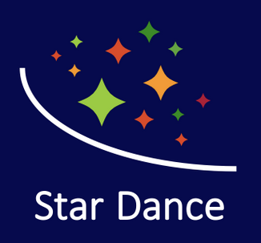
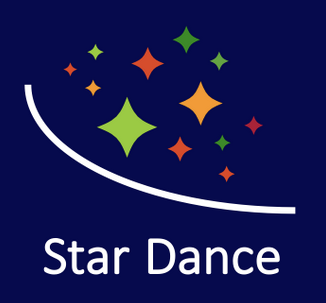

Dr. Ellen Leitinger
(Ellie)
Research fellow in Astrophysics
INAF Arcetri Astrophysical Observatory & DIFA Università di Bologna 🇮🇹
ellenivana.leitinger@unibo.it
Research fellow in Astrophysics
INAF Arcetri Astrophysical Observatory & DIFA Università di Bologna 🇮🇹
ellenivana.leitinger@unibo.it
Postdoctoral research in the Asterochronometry and StarDance projects
✧ Galactic archaeology
✧ Asteroseismology
✧ Binary stars
PhD
✧ Globular clusters
✧ Multiple stellar populations
✧ Photometry and spectroscopy
✧ Stellar kinematics
Masters
✧ Reverberation mapping of AGN
I was born in outback Australia, in a small town called Alice Springs. Due to the low levels of light pollution in central Australia, the night sky was bright and full of stars. There wasn't much to do in this small desert town, so during my childhood and teenage years I took every opportunity to stare at the stars. It's been my dream for a very long time to make a career out of looking up at the night sky ~✧
Astrophysics isn't all I do though! In my free time I love to go on adventures with friends and my 3 legged cat, Rae. I also love playing tennis, hiking and indoor climbing, as well as painting, baking desserts and adventuring in a Pathfinder campaign alongside my astrophysics friends!
During my PhD at the University of Queensland in Australia, I looked at a large sample of 30 Milky Way globular clusters in order to study the multiple stellar population phenomenon and work towards answering the question: “how did these clusters form?”.
The best way to look at a cluster is to look at the whole thing, so to get a wide-field view of each cluster, I targeted their central regions using Hubble Space Telescope photometry, while for the outer regions I used ground-based photometry from the extensive catalogue provided by Stetson et al. (2019). Using this combination of photometry, I classified the stars into either ‘primordial’ or ‘enriched’ populations, before calculating their spatial distributions. My aim was to see whether one population was more centrally concentrated than the other, as many formation theories suggest this to be the case. In the end what I discovered is that these populations can exhibit a wide range of spatial distributions, which was an unexpected result that sparked interest into new theories on how to explain this. You can read more in Leitinger et al. (2023).
My next PhD project at the European Southern Observatory in Germany was to take these same 30 clusters and look at their 3D kinematics. I wanted to see if the way these clusters and their populations are moving in 3D could explain the different spatial distributions I had previously found.
To get a 3D view, I combined proper motions with line-of-sight velocities, which allowed me to calculate the rotation angles, inclination angles, total rotational amplitudes, velocity dispersions and anisotropy profiles of the clusters and their populations.
What I discovered was that there were no significant rotational differences between the multiple populations, regardless of the spatial distributions of the populations. However, I did find that clusters with a primordial central concentration show anisotropy in their outer regions, while clusters with enriched central concentrations show either tangential anisotropy or isotropy. This is especially interesting, as globular clusters were once considered ‘simple stellar systems’, but the more we look at them, the more unique each cluster becomes. You can read more about all this in Leitinger et al. (2025).


Throughout my degree at the University of Queensland in Australia, I was a science demonstrator for Demo Troupe, a student-lead team performing live shows about the physics of exciting phenomena such as tesla coils and superconductors! I also helped to organise and supervise students for both the Junior Physics Odyssey and astrophysics work experience program - programs which encourages high school students to pursue an interest in physics by demonstrating popular physics experiments and providing support and feedback on their problem solving skills.
During my undergraduate degree, I spent 5 years as a teaching assistant with the University of Queensland by leading tutorials, workshops and laboratory experiments in the topics of electromagnetism and modern physics, theory and practice in science, the physical basis of biological systems and numerical methods in computational science. In tutorials and workshops, I gave short lectures and assisted undergraduate students in problem solving. As a laboratory tutor, I demonstrated and supervised a range of physics experiments, while also working as a grading assistant for assignments and laboratory reports.
Additionally, I spent 2 years employed as a physics laboratory assistant, assembling an exciting range of experiments for first, second and third year physics courses, with each course requiring 3-5 different experiments per semester. During my masters degree I was elected 'communications officer' of the University of Queensland's Physics Club: PAIN, where I had a wonderful time organising and advertising the weekly physics-related campus events and the annual stargazing retreat: Astrocamp!


 
